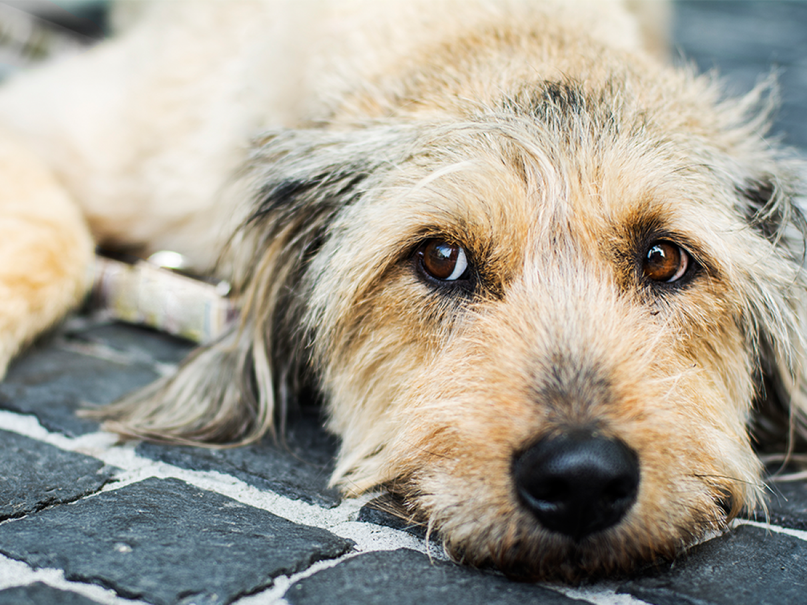

ZOE | 5 ANOS
Curitiba, Tatuquara
29/08/2025
HISTÓRIA DE ZOE
Zoe, uma vira-lata de 5 anos, é sábia, tranquila e cheia de amor para dar. Sobrevivente das ruas, mas sem rancor no coração, seu maior sonho é um lar tranquilo para chamar de seu. É castrada, vacinada e educada, e está pronta para ser sua companheira leal e grata.
Adote a Zoe e traga mais felicidade para a sua vida!